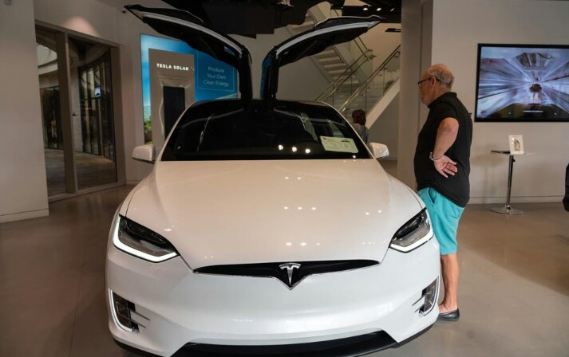

TESLA MODAL 2
Skip to content
Auto Chimps
Guides
News
Motorsport
Best Picks
Home » News » Tesla Model 2 Release Date, Price, Specs, Design, and News
Tesla Model 2 Release Date, Price, Specs, Design, and News
Here is everything we know so far about the Tesla Model 2, including the release date, price, specifications, performance, design and other relevant news.

Acceleration from 0 to 60 mph will probably be around the five-second mark, with a range of around 200 miles.
As time goes by with technology improvement, it would be no surprise if these estimations would be exceeded in a few years.
Tesla Model 2 Design
Tesla Model 2 Design
Image credit: TopElectric/YouTube
Just like the specifications, the design of the Model 2 can only be speculated about, but we may have an idea of how it could look.
The Tesla Model 2 is expected to be a compact but a practical 5-door practical compact car, kind of like a smaller Model Y.
Several renders are circulating the internet, including the interior and exterior.
Most of these renders are not based on any confirmed information. Instead, it is each of the respective artist’s interpretation of what a Model 2 may look like.
We may assume that the Model 2 will not differ significantly from the design language of any type of Tesla – simple and minimal design.
It may be so minimal that Elon Musk hinted that the Model 2 would come without pedals or a steering wheel, aiming to fulfill the vision of fully autonomous driving.
News About The Model 2
Tesla Model 2 Hatchback Design
Image credit: @sugardesign_1/Instagram
Due to a variety of reasons, such as “having enough on our plate” the Model 2 is currently on hold.
While this may sound discouraging to many people, it is evident that Tesla has much to catch up to with their late releases of the Cybertruck and Tesla Semi.
Nevertheless, we surely haven’t heard the last of the Model 2 as it would be a welcomed model in the Tesla lineup.
We will be sure to be the first to report any news regarding the Tesla Model 2. Stay tuned!
Related Reads
Polestar 4 Release Date, News, Range, Specs, Design and Price
Polestar 4 Release Date, Price, Specs, Design, and News
Polestar 5 Release Date, Price, Specs, Design and News
Polestar 5 Release Date, Price, Specs, Design, and News
Polestar 3 Release Date, News, Range, Specs, Design and Price
Polestar 3 Release Date, Price, Specs, Design, and News
Post navigation
Most Reliable Car Brands (2022 Rankings)
SHARE
TWEET
PIN
EMAIL
PDF
Polestar 3 Release Date, News, Range, Specs, Design and Price
POLESTAR 3 RELEASE DATE, PRICE, SPECS, DESIGN, AND NEWS
Bajro Muric
Bajro Muric
Bajro is a big car enthusiast with a love for writing and teaching. He writes about anything regarding cars - from common problems and fixes to racing.
More About Bajro Muric
SEARCH
Search for:
What are you looking for?
POPULAR NOW
Alternator Overcharging
Alternator Overcharging: Symptoms, Causes, And How To Fix
logo 40 white
Home About Largest Automakers By Market Cap Contact Privacy Policy
Copyright © 2022. All rights reserved.
Exclusive Member of Mediavine Home